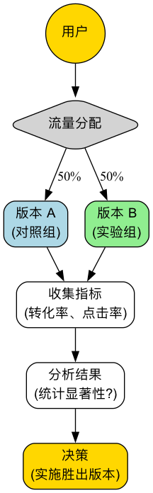

A/B测试¶
在产品设计和市场营销中，我们经常会面临一些看似主观的选择：是红色的按钮更吸引人，还是绿色的？是“立即购买”的文案转化率更高，还是“加入购物车”？与其依赖直觉或在会议室里无休止地争论，不如让真实的用户用他们的数据来告诉我们答案。A/B测试（A/B Testing），也称为分割测试（Split Testing），正是一种严谨、强大、以数据驱动的在线对照实验方法。它的核心在于，通过将用户流量随机地分为两组或多组，并向他们展示同一页面的不同版本（A版本和B版本），来比较和确定哪个版本在实现特定目标（如点击率、转化率）上表现更优。
A/B测试的本质，是将科学实验的逻辑应用于产品和营销决策中。它通过引入“随机”这一关键要素，来消除其他所有潜在的干扰因素（如用户来源、访问时间等），从而确保我们观察到的效果差异，能够以很高的置信度归因于我们所做的唯一改变。它将“我猜这个设计更好”的主观臆断，转变为“数据显示B版本比A版本的转化率高出15%，且统计上显著”的客观结论，是现代数据驱动增长文化不可或缺的核心工具。
A/B测试的核心构成要素¶
一次规范的A/B测试，包含以下几个关键部分：
- 假设（Hypothesis）：在测试开始前，你需要一个清晰的、可检验的假设。例如，“我相信，将注册按钮从蓝色改为橙色（改动），能够提高新用户的注册转化率（预期结果），因为橙色在页面上更醒目（理由）。”
- 对照组（Control, A版本）：即当前正在线上使用的、未做任何改动的原始版本。它是所有比较的基准。
- 实验组（Variation, B版本）：即你应用了单一改动的、希望能够带来更好效果的新版本。
- 单一变量原则：一次标准的A/B测试，应该只测试一个变量。如果你同时改变了按钮颜色和文案，那么最终即使B版本胜出，你也无法确定究竟是哪个改动起到了决定性作用。
- 随机分配流量：必须将用户流量完全随机地、均匀地分配给A版本和B版本。这是确保测试结果无偏、可信的科学前提。
- 目标指标（Metric）：你需要一个清晰的、可量化的指标来衡量测试的成功与否。这个指标必须与你的假设直接相关，例如“点击率”、“转化率”、“平均停留时长”等。
A/B测试的工作流程¶

B[2 创建实验组版本B] B --> C[3 设置目标指标] C --> D[4 随机分配流量] D --> E[对照组A 查看原始版本] D --> F[实验组B 查看新版本] E --> G[5 收集并监控数据] F --> G G --> H[6 执行统计显著性测试] H --> I[7 分析结果，得出结论] I --> J[8 实施获胜版本] H --> K[7b 重新分析或放弃假设] ```
如何进行一次A/B测试¶
-
第一步：研究与假设
基于数据分析（如用户行为热力图）、用户反馈或启发式评估，找到当前产品或流程中可能存在问题的环节，并提出一个具体的、可检验的改进假设。
-
第二步：创建变体
基于你的假设，设计并开发实验组（B版本）。确保B版本与A版本的唯一区别，就是你想要测试的那个变量。
-
第三步：确定目标与样本量
- 明确你用来衡量成功的核心指标是什么。
- 在测试开始前，你需要使用样本量计算器，来估算需要多少用户参与测试，才能让你的结果具有足够的统计功效（Statistical Power）。样本量太小，可能会导致你无法检测到真实存在的差异。
-
第四步：实施测试
使用专业的A/B测试工具（如Google Optimize, Optimizely等），配置你的测试。设定流量分配比例（通常是50/50），并启动测试。
-
第五步：监控与分析结果
让测试运行足够长的时间，直到达到预设的样本量或统计显著性水平。然后，分析测试结果。你需要关注两个核心的统计概念： * 转化率差异：B版本相对于A版本的提升百分比。 * 统计显著性（Statistical Significance）：通常用P值来表示。P值代表了“我们观察到的差异，仅仅是由于随机巧合而产生的概率”。通常，当P值小于0.05（即95%的置信水平）时，我们才认为这个结果是统计显著的，可以采信。
-
第六步：得出结论并行动
- 如果B版本显著胜出，那么恭喜你，你的假设得到了验证。下一步就是将B版本全面部署给所有用户。
- 如果A版本胜出，或者两者之间没有显著差异，那同样是一次有价值的学习。这说明你的初始假设是错误的，你需要重新分析，并提出新的假设进行下一轮测试。
应用案例¶
案例一：奥巴马竞选团队的筹款页面优化
- 场景：在2008年美国总统大选中，奥巴马的竞选团队希望优化其官方网站的捐款页面，以提升注册和捐款的转化率。
- A/B测试应用：他们对页面的头图和按钮文案，进行了大量的A/B测试（严格来说是多变量测试）。在一个著名的测试中，他们发现，将头图从一张奥巴马的单人照片，换成一张奥巴马的全家福，并将按钮文案从“Sign Up”改为“Learn More”，最终使得页面的注册转化率提升了惊人的40.6%。这次测试为竞选团队带来了数千万美元的额外捐款。
案例二：Booking.com的持续测试文化
- 场景：全球最大的在线酒店预订平台Booking.com，以其极致的A/B测试文化而闻名。
- 应用：据报道，在任何一个时间点，Booking.com的网站上都同时运行着上千个A/B测试。从搜索结果的排序方式，到酒店图片的大小，再到“仅剩X间房！”这类微小的文案，每一个改动都必须经过严格的A/B测试的检验。正是这种对数据驱动决策的极致追求，使得他们能够持续地、微小地优化用户体验，并最终构筑起强大的竞争壁垒。
案例三：一家新闻网站的付费墙测试
- 场景：一家新闻网站希望尝试付费订阅模式，但不确定哪种付费墙策略对用户的付费转化和留存最有利。
- A/B测试应用：
- A版本（计量式）：允许所有用户每月免费阅读5篇文章，超出后提示付费。
- B版本（免费增值式）：部分文章免费，但深度报道和独家评论等“精品内容”需要付费订阅才能阅读。
- 通过长达数月的测试，他们可以比较两种模式下的付费转化率、用户流失率和总订阅收入，从而选择最适合自己的商业模式。
A/B测试的优势与挑战¶
核心优势
- 客观与数据驱动：用真实的用户行为数据来代替主观猜测和争论，为决策提供了最硬的证据。
- 低风险的创新：允许你在将一个改动全面铺开之前，先用一小部分流量来测试其效果，极大地降低了因错误决策而导致负面影响的风险。
- 持续优化的引擎：为产品和营销的持续、迭代式优化，提供了一个科学、严谨的循环框架。
潜在挑战
- 需要足够的流量：对于流量较小的网站或App，要达到统计显著性可能需要非常长的时间，甚至是不可能的。
- 单一变量的局限：有时，多个改动的组合可能会产生意想不到的协同效应，而这在标准的A/B测试中是无法发现的（需要使用更复杂的多变量测试）。
- “局部最优”陷阱：持续地对现有页面进行微小的A/B测试，可能会让你陷入“局部最优”的陷阱，而忽略了进行颠覆性、革命性重新设计的更大机会。
- 忽略长期影响：A/B测试通常衡量的是短期效果（如点击率）。某些改动可能在短期内提升了指标，但长期来看可能会损害用户信任或品牌形象。
延伸与关联¶
- 多变量测试（Multivariate Testing, MVT）：是A/B测试的延伸。当你希望同时测试一个页面上多个元素的多种组合（例如，同时测试3种标题、2种图片和2种按钮颜色）时，可以使用MVT。它能告诉你哪个元素的组合效果最佳，以及每个元素对最终结果的相对贡献度。
- 可用性测试：是一种定性研究方法。它不能告诉你“哪个版本更好”，但能告诉你“为什么”用户在某个版本上遇到了困难。通常，可以在进行A/B测试之前，先进行可用性测试，以获得关于“应该测试什么”的灵感。
来源参考：A/B测试的理念根植于经典的统计学实验设计。在互联网领域，它最早被谷歌、亚马逊等科技巨头广泛应用于网页和产品的优化中，并逐渐成为数字营销和增长黑客（Growth Hacking）领域的核心技能。